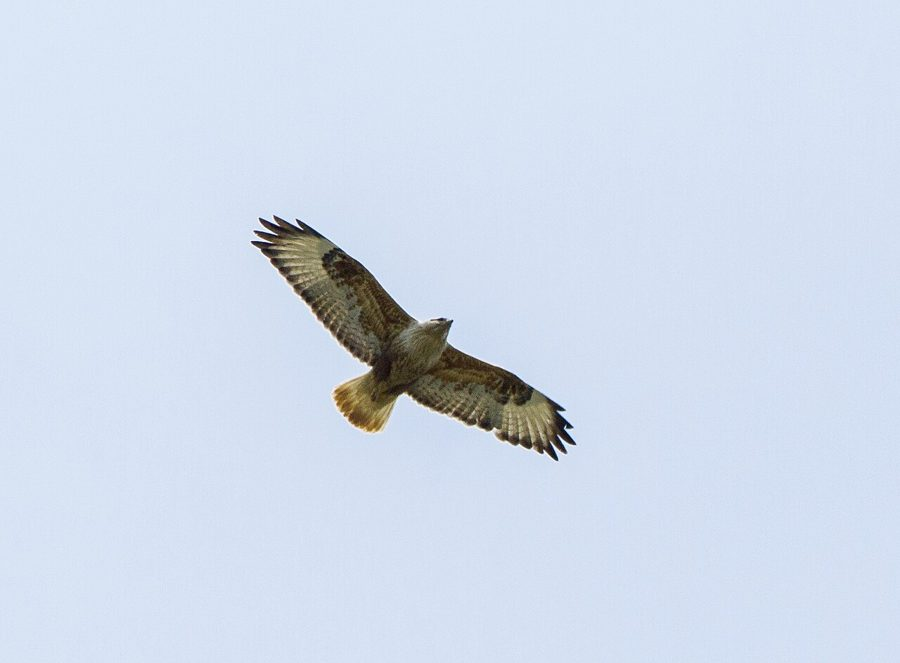

लॉन्ग-लेग्ड बज़र्डLong-legged Buzzard
Buteo rufinus · Accipitridae · BRD-0219

- Scientific name वैज्ञानिक नाम
- Buteo rufinus (Cretzschmar, 1827)
- Family कुल
- Accipitridae
- Hindi हिंदी
- लॉन्ग-लेग्ड बज़र्ड
- Local names स्थानीय नाम
- long-legged buzzard, long legged buzzard, buzzard
- Status here यहाँ की स्थिति
- native
- Movement आवागमन
- Winter visitor
- Known from कहाँ दर्ज
- Others have published records from the Basti–Ayodhya districts बस्ती–अयोध्या के ज़िलों से दूसरों के प्रकाशित अभिलेख
- IUCN IUCN
- LC
- Review समीक्षा
- audited and independently read
When to look कब देखें
Winter visitor शीतकालीन प्रवासी. Expected mainly in September, October, November, December, January, February, March. मुख्यतः सितंबर, अक्टूबर, नवंबर, दिसंबर, जनवरी, फ़रवरी, मार्च में अपेक्षित।
Breeds in Central Asia and southern Russia; arrives in eastern UP from September, departing by March (Grimmett et al. 2011, Yashmita-Ulman & Singh 2022). All migrants and visitors →
Tell it apart from इनसे अलग पहचानें
लॉन्ग-लेग्ड बज़र्ड / Long-legged Buzzard
Buteo rufinus (Cretzschmar, 1827) — Accipitridae
लॉन्ग-लेग्ड बज़र्ड — यह बड़ा, भूरा शिकारी पक्षी सर्दियों में पूर्वी उत्तर प्रदेश के खुले मैदानों में आता है। इसकी सबसे बड़ी पहचान इसकी असाधारण रूप से लंबी पीली टाँगें हैं, जो इसके शरीर से भी ज़्यादा लंबी होती हैं। यह आसमान में चक्कर लगाता है और छोटे जानवरों को देखता है। इसका रंग भूरा या लाल-भूरा होता है, और पूंछ हल्के रंग की होती है।
Quick Identification त्वरित पहचान
| Feature | Description |
|---|---|
| Size | Large buzzard; 58–65 cm total length |
| Legs | Distinctively long yellow legs (diagnostic); feathered to tarsus |
| Plumage | Variable; tawny-brown to russet-brown overall |
| Head | Relatively small; pale lores |
| Wings | Long; pale patches on wing coverts visible in flight |
| Tail | Pale; barred; relatively short |
| Flight | Soars high with wings in shallow V; hunts from perches |
| Behaviour | Perches on low posts, telephone poles and ground |
Field tip: A large, pale brown buzzard with extraordinarily long yellow legs. Often seen perched on telephone poles, posts or the ground in open country. Characteristic flight shows long wings and soaring behaviour. The long legs are the key identification feature.
हिंदी — कैसे पहचानें:
बड़ा भूरा शिकारी पक्षी।
पीली, लंबी टाँगें (सबसे बड़ी पहचान)।
खुले मैदानों में।
आसमान में चक्कर लगाता है।
Morphology आकारिकी
Biometrics:
| Measurement | Range |
|---|---|
| Total length | 580–650 mm |
| Wing (flattened chord) | 390–460 mm |
| Tail | 190–230 mm |
| Tarsus | 55–70 mm |
| Bill (culmen) | 18–22 mm |
| Weight (male) | 540–840 g |
| Weight (female) | 750–1200 g |
Size: 58–65 cm long; wingspan 130–160 cm. Weight 540–1200 g (females larger than males).
Plumage: Highly variable. Generally tawny or russet-brown overall. Head relatively small and pale. Back and wing coverts brown with pale patches. Primary feathers darker. Tail pale with dark barring. Throat and breast may show pale streaking. Underparts vary from pale to rufous-brown.
Legs and feet: The defining feature: very long yellow legs, feathered to the tarsus. Claws blackish.
Bill: Relatively short and stout, hooked; yellow at base, dark at tip.
Eyes: Yellow to orange-yellow.
Tail: Relatively short for a large buzzard; pale with dark barring.
Vocalisations
- Call: Mostly silent; occasional mewing call given during breeding or displays; rarely heard in the field.
- Display sounds: Vocal displays rare.
हिंदी: बहुत शांत पक्षी है। कभी-कभी "म्याऊ" जैसी आवाज़। सर्दियों में शायद ही सुनाई दे।
Behaviour & Ecology व्यवहार और पारिस्थितिकता
Soaring hunter: Hunts from a perch or by soaring at considerable height over open country. Often seen hovering.
Prey: Small mammals (rodents, ground squirrels, hares); birds (game birds, pigeons); reptiles (snakes, lizards); large insects.
Hunting technique: Watches from a perch (post, pole, low tree or ground) or soars at height; drops onto prey with rapid descent.
Solitary: Generally solitary in the wintering range, though loose aggregations may form at rich feeding areas.
Perching: Frequently perches on telephone poles, fence posts and low branches, unlike many raptors.
हिंदी: खुले मैदानों में शिकार करता है। खंभों पर बैठता है। चूहे और छोटे जानवर खाता है। अकेले या कभी-कभी छोटे समूहों में।
Life Cycle / Phenology जीवन चक्र
Winter visitor: Does not breed in Uttar Pradesh. Arrives from September from breeding grounds in Central Asia and southern Russia; departs by March–April. Peaks in November–February.
Breeding range: Central Asia, southern Russia, Kazakhstan, and the steppes from the Caucasus eastward.
Calendar in eastern UP:
- September: vanguard arrivals
- October–February: main wintering period
- March: departure northward
- April–August: absent from the region
Moult: Complete moult occurs before arrival; birds arrive in full non-breeding plumage.
हिंदी: सितंबर में आता है, मार्च तक रहता है। उत्तर प्रदेश में प्रजनन नहीं करता। मध्य एशिया में प्रजनन करता है।
Host Plants or Prey आहार
Primary food items:
- Small mammals (rodents, ground squirrels, suslik)
- Hares
- Game birds (partridges, quails)
- Pigeons and doves
- Snakes and other reptiles
- Large grasshoppers and locusts (occasionally)
Predators / Natural Enemies शत्रु
- : May prey on juvenile or weakened buzzards
- Larger eagles: Occasionally take long-legged buzzards
Agricultural / Human Relevance कृषि प्रासंगिकता
Rodent control: By preying on rodents and ground squirrels, may help control agricultural pests in cultivated areas. Benefit is modest at the regional scale.
Historical hunting: The species has been hunted in parts of its range historically, though hunting is now prohibited in India.
Legal status: Protected under the Wildlife Protection Act 1972. Populations are stable across the wintering range. Populations have declined in the breeding range due to persecution and habitat loss, but winter populations remain substantial.
Expected Locally स्थानीय रूप से अपेक्षित
Not a field record. Written from published accounts for eastern Uttar Pradesh. No confirmed local sighting yet — if you have seen it, that is what the atlas needs.
अभी तक स्थानीय पुष्टि नहीं। यह विवरण प्रकाशित स्रोतों से है, किसी अवलोकन से नहीं।
Recorded at Samda Jheel and other unprotected wetlands of Ayodhya District (Yashmita-Ulman & Singh 2022). Expected from September to March in open grasslands, cultivated fields and wetland margins. Most commonly seen perched on telephone poles in open country, watching for small mammals. More abundant in years of high rodent populations. The first local record would be a photograph showing the distinctive long yellow legs and pale brown plumage, with place and date, submitted through the About page.
हिंदी: सितंबर से मार्च तक खुले मैदानों में देखे जाने की उम्मीद है। आयोध्या के अध्ययन में दर्ज है। पहला रिकॉर्ड फोटोग्राफ के साथ तारीख़ और जगह दिखानी चाहिए।
Distribution वितरण
Global range: Breeds in southern Russia, Central Asia, Iran, Turkey and northwestern Africa; winters across North Africa, Middle East and the Indian subcontinent.
In India: Winter visitor to the plains and peninsula (September–March); occurs across the Indian subcontinent.
In Uttar Pradesh: Winter visitor and passage migrant; recorded state-wide in open country.
In Basti district / eastern UP: Winter visitor from September to March; expected in open grasslands and cultivated fields. GBIF records from the wider Awadh plain; recorded at Samda Jheel, Ayodhya (Yashmita-Ulman & Singh 2022).
Research Questions शोध प्रश्न
- What is the detailed prey composition and hunting success rate of long-legged buzzards in cultivated versus uncultivated habitats?
- Do long-legged buzzards show site fidelity, returning to the same wintering territories year after year?
- क्या कृषि में बदलाव से इस गिद्ध की संख्या बदल रही है?
- What is the population trend of long-legged buzzards wintering in eastern UP over the past two decades?
- How does perch availability (telephone poles, posts) affect buzzard density and hunting success? (Can be monitored through point counts and activity surveys.)
- क्या जलवायु परिवर्तन इसके आगमन और प्रस्थान की तारीखों को प्रभावित कर रहा है?
Similar Species मिलती-जुलती प्रजातियाँ
| Species | Key Difference | Hindi | Field Rule | |
|---|---|---|---|---|
| [[steppe_eagle\ | Steppe Eagle]] (Aquila nipalensis) | Much larger; dark plumage; short legs; different flight profile | — | Steppe eagle is much larger and darker with shorter legs. Long-legged buzzard shows very long yellow legs and smaller size. |
| [[tawny_eagle\ | Tawny Eagle]] (Aquila rapax) | Large eagle; entirely dark plumage; shorter legs; different silhouette | — | Tawny eagle is much larger and darker. Long-legged buzzard is pale brown with distinctly long yellow legs. |
| Golden eagle (Aquila chrysaetos) | Much larger; entirely dark; short legs; different habitat preference | — | Golden eagle is vastly larger and darker. Long-legged buzzard is smaller and paler with long yellow legs. |
Field rule: Long-legged buzzard is uniquely identified by its pale brown plumage and extraordinarily long yellow legs. No other common raptor in the region has such distinctive long, bare yellow legs.
Taxonomy & Classification वर्गीकरण
Original description. Described by Cretzschmar in 1827 in Atlas zu Reisen im nördlichen Africa as Falco rufinus. Type locality is North Africa.
Subspecies. Five subspecies recognised; B. r. rufinus (from Central Asia eastward) occurs in India.
Family and order placement. Order Accipitriformes; family Accipitridae (eagles, hawks and buzzards). Genus Buteo contains the buzzards, many of which are widespread.
Phylogenetic notes. Closely related to other large buzzards including the common buzzard (B. buteo) of Eurasia.
IUCN status rationale. Least Concern globally. Widespread on breeding grounds and widespread in winter. Populations remain substantial, though there has been some decline in breeding areas due to persecution and habitat loss. Wintering populations are stable.
हिंदी: विश्वभर में सामान्य शिकारी पक्षी है। भारत में सर्दियों में आता है। कानूनी सुरक्षा में है।
Photo Gallery फोटो गैलरी
No photos yet — add field photos to media/species/long_legged_buzzard/ and run node scripts/sync_photos.js.
Wanted photos:
- Perched on pole showing long yellow legs
- In flight showing wing pattern
- Soaring at height
- Close-up of head and legs
References संदर्भ
- Cretzschmar, J. F. W. (1827). Atlas zu Reisen im nördlichen Africa und westlichen Asien. Halberstadt. Pl. 17.
- Ali, S. & Ripley, S. D. (1968). Handbook of the Birds of India and Pakistan. Vol. 1 (Divers to Hawks). Oxford University Press, Delhi. Pp. 335–337.
- Grimmett, R., Inskipp, C. & Inskipp, T. (2011). Birds of the Indian Subcontinent (2nd edn). Oxford University Press, Delhi. Pp. 129.
- Yashmita-Ulman & Singh, M. (2022). Avifaunal diversity in unprotected wetlands of Ayodhya District, Uttar Pradesh, India. Journal of Threatened Taxa, 14(8): 21561–21578.
- GBIF Occurrence Data — Buteo rufinus, India.
- IUCN Red List (2023). Buteo rufinus — BirdLife International. IUCN, Cambridge. Status: Least Concern.
Source file: species/fauna/birds/long_legged_buzzard.md